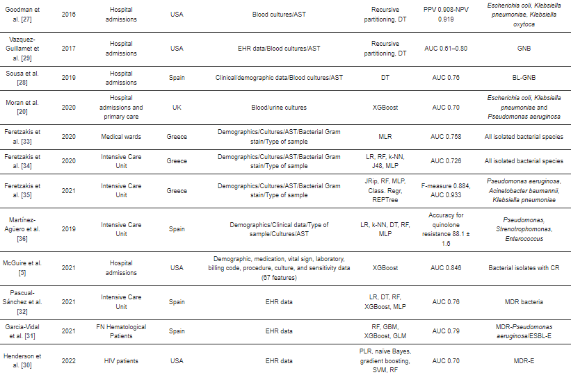

A utilização de modelos de aprendizado de máquina demonstram um avanço tecnológico de grande importância na área da saúde atualmente, fazendo com que se torne um marco para o desenvolvimento de novas ideias e tecnologias mais eficientes para novas pesquisas e tratamento dos pacientes. Os modelos de aprendizado de máquina se tornaram vitais para o progresso da área trazendo uma maior velocidade de diagnóstico, precisão e simplicidade.
A predição precisa da resistência a antibióticos é essencial para evitar falhas no tratamento e maximizar a eficácia terapêutica. O papel dos algoritmos de aprendizado de máquina (ML) na predição da resistência antimicrobiana e na seleção de tratamentos apropriados. Várias abordagens de modelagem de ML foram aplicadas por diferentes pesquisadores para prever padrões de susceptibilidade a antibióticos em patógenos, incluindo o uso de árvores de decisão, regressão logística multivariada e algoritmos de classificação ML.
Vários estudos na área demonstram que os modelos de ML têm o potencial de superar a precisão dos métodos tradicionais e até mesmo do julgamento clínico humano na predição da resistência a antibióticos. Por exemplo, algoritmos como o XGBoost mostraram maior precisão na predição da resistência do que a equipe médica em algumas situações. Além disso, foi observado que modelos baseados em dados clínicos e epidemiológicos podem ser eficazes na previsão da resistência antimicrobiana, permitindo uma abordagem mais personalizada ao tratamento.
Nesses estudos que foram revisados foi destacadoa a importância da validação e adaptação dos modelos de ML para diferentes populações e contextos clínicos. Embora os resultados sejam promissores, há desafios a serem superados, como a generalização dos modelos para diferentes cenários clínicos e a integração eficaz dos algoritmos de ML nos sistemas de saúde existentes.
Sakkagianni após a realização de uma pesquisa literaria na área conseguiu encontrar várias pesquisas importantes que conseguem demonstrar um grande avanço e utilibilidade da utilização de aprendizado de máquina na área de predição de padrões de susceptibilidade de antibioticos, como pode ser visto na tabela abaixo:
Os resultados sugerem que os algoritmos de ML têm o potencial de revolucionar a abordagem ao tratamento antimicrobiano, permitindo uma seleção mais precisa de antibióticos e melhorando os resultados clínicos para os pacientes. No entanto, são necessárias mais pesquisas e colaborações interdisciplinares para traduzir essas descobertas em prática clínica rotineira.